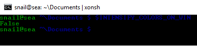

Cross-platform¶
Cross-platform xonsh RC¶
First of all because a xonsh RC is plain xonsh code, you can ship a single file across Linux, macOS, and Windows and gate snippets on platform and execution-mode flags.
Platform flags are lazy booleans exposed by xonsh.platform:
ON_LINUX— LinuxON_DARWIN— macOSON_WINDOWS— native WindowsON_POSIX,ON_CYGWIN,ON_MSYS,ON_FREEBSD,ON_NETBSD,ON_OPENBSD,ON_DRAGONFLY,ON_BSD(any of the four) — other OS familiesON_ANDROID— any Android userland: Termux, UserLAnd, proot-distro, Linux Deploy chroot, and so on. Note thatON_LINUXis False on Android with Python 3.13+ (see PEP 738), so gate Android-aware code onON_ANDROIDrather thanON_LINUX.ON_TERMUX— specifically the Termux app (and forks that keep its$TERMUX_VERSIONenv var). ImpliesON_ANDROIDplus the Termux$PREFIX = /data/data/com.termux/files/usruserland layout.IN_APPIMAGE— running inside an AppImage bundleIN_FLATPAK— running inside a Flatpak sandbox
Execution-mode flags live in the environment:
$XONSH_INTERACTIVE—Truewhen xonsh is running an interactive shell. Use it to gate anything that only makes sense with a live terminal (aliases you type, key bindings, prompt colors, xontribs that hook the REPL). Safe to use inside an RC that issource-d at runtime, because it reflects the current session.$XONSH_MODE— the startup mode as a string:interactive,script_from_file,source,single_command,script_from_stdin. Useful to distinguish “started as a shell” from “invoked to run one command” or “executed as a script”. For gating logic inside an RC, prefer$XONSH_INTERACTIVE—$XONSH_MODEreflects the original startup mode, not the context the RC is currently running in.
Typical pattern:
from xonsh.platform import ON_LINUX, ON_DARWIN, ON_WINDOWS
if $XONSH_INTERACTIVE:
# Only in a live terminal — skipped when the RC is run as a script
aliases['ll'] = 'ls -la'
$PROMPT = $PROMPT.replace('{prompt_end}', 'myproject {prompt_end}')
if ON_LINUX:
$LS_COLORS = 'di=1;34:ln=35'
elif ON_DARWIN:
aliases['ls'] = 'ls -G'
elif ON_WINDOWS:
$PATHEXT.append('.PY')
else:
# Script / non-interactive mode — fail fast
$XONSH_SHOW_TRACEBACK = True
$XONSH_SUBPROC_CMD_RAISE_ERROR = True
*nix¶
Tips that apply to Unix-like systems in general (Linux, macOS, BSD, WSL). Platform-specific notes live in their own sections below.
Tab completion¶
Xonsh has support for using bash completion files on the shell. To use it you need to install the bash-completion package. The regular bash-completion package uses v1 which mostly works, but we recommend using bash-completion v2.
Bash completion comes from the
bash-completion project which
suggests you use a package manager to install it. The package manager will
also install a new version of bash without affecting /bin/bash. Xonsh
also needs to be told where the bash completion file is — add it to
$BASH_COMPLETIONS. The package includes completions for many Unix
commands.
Common packaging systems for macOS:
Homebrew — install the
bash-completion2package:@ brew install bash-completion2This will install the completion file to
/usr/local/share/bash-completion/bash_completion(Intel Mac) or/opt/homebrew/share/bash-completion/bash_completion(Apple Silicon) — both are in the default xonsh search path and should just work.MacPorts — install the
bash-completionport (docs):@ sudo port install bash-completionThis includes a completion file that needs to be added to the environment:
@ $BASH_COMPLETIONS.insert(0, '/opt/local/share/bash-completion/bash_completion')
The bash-completion project page
refers to .../profile.d/bash_completion.sh which in turn sources the
main completion script mentioned above and one in $XDG_CONFIG_HOME.
Alternatively, take a look at xontrib-fish-completer for a modern fish-style approach.
Linux¶
Colored man pages¶
You can add man page color support using less environment variables —
these work on any POSIX system with less as the pager:
# format is '\E[<brightness>;<colour>m'
$LESS_TERMCAP_mb = "\033[01;31m" # begin blinking
$LESS_TERMCAP_md = "\033[01;31m" # begin bold
$LESS_TERMCAP_me = "\033[0m" # end mode
$LESS_TERMCAP_so = "\033[01;44;36m" # begin standout-mode
$LESS_TERMCAP_se = "\033[0m" # end standout-mode
$LESS_TERMCAP_us = "\033[00;36m" # begin underline
$LESS_TERMCAP_ue = "\033[0m" # end underline
libgcc_s.so.1 error on startup¶
On certain (mostly older or stripped) Linux distributions you may occasionally see this error when starting xonsh:
libgcc_s.so.1 must be installed for pthread_cancel to work
Aborted (core dumped)
This is an upstream CPython issue — libgcc must already be loaded at the time a thread is cancelled. Preloading it fixes the crash:
$ env LD_PRELOAD=libgcc_s.so.1 xonsh
UTF-8 characters and locale¶
If UTF-8 characters fail with errors like:
@ echo "ßðđ"
UnicodeEncodeError: 'ascii' codec can't encode characters in position 0-2...
your process locale is not UTF-8. Usually seen in minimal containers,
stripped SSH sessions, systemd units, or cron jobs where LANG / LC_ALL
are set to C or POSIX.
The locale must be set before xonsh starts — setting $LC_ALL from
your xonsh RC is too late for subprocesses that already
inherited the broken environment. Fix it at the OS level (~/.pam_environment,
/etc/locale.conf, the container image’s base layer, or the systemd unit’s
Environment= directive). As a temporary workaround, PYTHONUTF8=1
forces Python into UTF-8 mode regardless of locale.
Bash module warnings on startup¶
Depending on how your installation of Bash is configured, xonsh may show warnings when loading certain shell modules. If you see errors similar to this when launching xonsh:
bash: module: line 1: syntax error: unexpected end of file
bash: error importing function definition for 'BASH_FUNC_module'
bash: scl: line 1: syntax error: unexpected end of file
bash: error importing function definition for 'BASH_FUNC_scl'
Unset the affected functions in your ~/.bashrc:
$ unset module
$ unset scl
“Open Terminal Here” action in Thunar (XFCE)¶
If you use Thunar and the “Open Terminal Here” action does not work with xonsh, you can replace the command for this action:
exo-open --working-directory %f --launch TerminalEmulator xonsh --shell-type=best
Open Edit > Configure custom actions..., select Open Terminal Here,
and click Edit currently selected action.
macOS¶
Path Helper¶
macOS provides a path helper,
which by default configures paths in bash and other POSIX or C shells. Without
including these paths, common tools including those installed by Homebrew
may be unavailable. See /etc/profile for details on how it is done.
To ensure the path helper is invoked on xonsh (for all users), add the
following to /etc/xonsh/xonshrc:
source-bash $(/usr/libexec/path_helper -s)
To incorporate the whole functionality of /etc/profile:
source-bash --seterrprevcmd "" /etc/profile
GNU Coreutils¶
macOS ships with BSD versions of common utilities (ls, grep, sed,
etc.) which have different flags and behaviour compared to the GNU versions
found on Linux. If you work across both platforms or prefer GNU behaviour,
install GNU coreutils and grep via Homebrew:
@ brew install coreutils grep findutils gnu-sed gnu-tar gawk
Homebrew installs GNU tools with a g prefix (e.g. gls, ggrep).
To use them without the prefix, add the GNU paths to your $PATH in
your xonsh RC:
brew_prefix = $(brew --prefix).strip()
gnu_paths = [
f"{brew_prefix}/opt/coreutils/libexec/gnubin",
f"{brew_prefix}/opt/grep/libexec/gnubin",
f"{brew_prefix}/opt/findutils/libexec/gnubin",
f"{brew_prefix}/opt/gnu-sed/libexec/gnubin",
f"{brew_prefix}/opt/gnu-tar/libexec/gnubin",
]
for p in gnu_paths:
if @.imp.os.path.isdir(p):
$PATH.insert(0, p)
After this, ls, grep, sed, etc. will be the GNU versions.
Android / Termux¶
Xonsh runs on Android via Termux and similar
sandboxes (UserLAnd, proot-distro, Linux Deploy). The Android userland
is Linux-kernel-based but uses bionic libc, a non-FHS layout under
$PREFIX, and the per-app filesystem sandbox — a few quirks follow
from that.
Installing¶
In a fresh Termux install, set up xonsh and a working bash completion framework:
@ pkg install python git bash-completion man
@ pip install 'xonsh[full]'
@ xonsh
xonsh RC lives at the usual ~/.xonshrc; everything
else (history, data dir, completions cache) lands under
$XDG_DATA_HOME inside $PREFIX.
Sandbox limitations¶
Android disallows a few syscalls that desktop Linux takes for granted:
os.listdir("/")— denied. Globs that have to enumerate the FS root return empty (e.g.ls /e<TAB>will not find/etc/). Locate items by absolute literal path (/data/data/com.termux/...) or relative paths under$HOME/$PREFIXinstead.os.tcsetpgrp— restricted, returnsEACCES. xonsh’s pipeline manager handles this gracefully (no controlling terminal handover), so subprocesses still work; you just don’t get bash-style job control on Android-only sessions.os.link— not exposed in Python on bionic. xonsh xoreutilscp -land similar features fall back to copying.
Detecting Android in xonshrc¶
from xonsh.platform import ON_ANDROID, ON_TERMUX
if ON_ANDROID:
# Anything that should be tweaked for the Android sandbox in
# general — runs in Termux, UserLAnd, proot-distro alike.
$XONSH_HISTORY_BACKEND = 'json' # sqlite is fine but json
# avoids the WAL lock on /sdcard
if ON_TERMUX:
# Termux-specific niceties.
aliases['open'] = 'termux-open'
aliases['share'] = 'termux-share'
Use ON_ANDROID for sandbox/bionic-aware code that should also fire
under non-Termux Android shells. Reserve ON_TERMUX for things that
genuinely depend on Termux’s path layout.
Tab completion¶
After pkg install bash-completion, completions for git, pip, ssh,
-- long options, and so on work out of the box — xonsh probes
$PREFIX/share/bash-completion/bash_completion by default.
For commands xonsh itself provides (cd, rmdir, …) and
filesystem path completion, the same case-insensitive, subsequence- and
fuzzy-tier behaviour described in completers
applies on Android.
Windows¶
Coreutils¶
Windows ships none of the familiar Unix command-line utilities (ls,
grep, cat, cp, find, sed, …) by default. The options
below give you a working set, ordered roughly from most lightweight and
xonsh-native to most comprehensive.
xonsh built-in coreutils. A pure-Python xontrib that ships with xonsh registers
cat,echo,pwd,tee,tty,umask,uname,uptime,yesas aliases — no install, identical behaviour on every platform:@ xontrib load coreutilswhichis already wired by default. Add the line above to your xonsh RC to load it on every session.cmdix — pure-Python implementation of a much larger GNU-style set:
ls,cp,mv,rm,find,grep,head,tail,wc,sort,uniq,du,df,date,base64, and many more. Because it’s Python it installs into the same interpreter as xonsh and behaves identically across Windows, macOS, and Linux:@ xpip install cmdixuutils/coreutils — modern Rust port of GNU coreutils as a single multi-call binary (
coreutils.exe) plus per-command shims. Stays very close to the GNU originals, including locale and Unicode handling:@ winget install uutils.coreutilsMSYS2 — pacman-based distribution shipping full GNU coreutils, findutils, grep, sed, awk, tar, gzip, openssl, make, gcc/clang, and thousands of other packages. The most comprehensive option. After the base install, add the relevant
usr/bindirectory (e.g.C:\msys64\usr\bin) to$PATHin your xonsh RC.Git for Windows
usr/bin. If Git is already installed,C:\Program Files\Git\usr\binalready contains a curated MinGW-w64 toolset (ls,grep,sed,awk,find,ssh,curl,tar,gzip,less, …). The fastest way to get a working Unix toolchain without installing anything extra:git_usr_bin = r'C:\Program Files\Git\usr\bin' if @.imp.os.path.isdir(git_usr_bin): $PATH.append(git_usr_bin)busybox-w32 — single-binary BusyBox port covering 300+ commands in roughly 1 MB. Drop
busybox.exeon$PATHand call commands asbusybox ls/busybox grep ..., or symlink each applet tobusybox.exeso they resolve as bare names. Ideal for portable USB or air-gapped setups.
Windows Terminal¶
If you are running a supported version of Windows (which is now Windows 10, version 2004 or later),
we recommend the Windows Terminal (wt.exe) rather than the time-honored cmd.exe. This provides
unicode rendering, better ansi terminal compatibility and all the conveniences you expect
from the terminal application in other platforms.
You can install it from the Microsoft Store or from Github.
By default Windows Terminal runs Powershell, but you can add a profile tab to run Xonsh and even configure it to open automatically in xonsh. Here is a sample settings.json:
{
"$schema": "https://aka.ms/terminal-profiles-schema",
"defaultProfile": "{61c54bbd-c2c6-5271-96e7-009a87ff44bf}",
// To learn more about global settings, visit https://aka.ms/terminal-global-settings
// To learn more about profiles, visit https://aka.ms/terminal-profile-settings
"profiles":
{
"defaults":
{
// Put settings here that you want to apply to all profiles.
},
"list":
[
{
// Guid from https://guidgen.com
"guid": "{02639f1c-9437-4b34-a383-2df49b5ed5c5}",
"name": "Xonsh",
"commandline": "c:\\users\\bobhy\\src\\xonsh\\.venv\\scripts\\xonsh.exe",
"hidden": false
},
{
// Make changes here to the powershell.exe profile.
"guid": "{61c54bbd-c2c6-5271-96e7-009a87ff44bf}",
"name": "Windows PowerShell",
"commandline": "powershell.exe",
"hidden": false
}
]
},
. . .
{kind=link}
Nice colors¶
The dark red and blue colors are completely unreadable in cmd.exe.
{kind=link}

Xonsh has some tricks to fix colors. This is controlled by the
$INTENSIFY_COLORS_ON_WIN
environment variable which is True by default.
$INTENSIFY_COLORS_ON_WIN has the following effect:b
- On Windows 10:
Windows 10 supports true color in the terminal, so on Windows 10 Xonsh will use a style with hard coded colors instead of the terminal colors.
- On older Windows:
Xonsh replaces some of the unreadable dark colors with more readable alternatives (e.g. blue becomes cyan).
Avoid locking the working directory¶
Python (like other processes on Windows) locks the current working directory so
it can’t be deleted or renamed. cmd.exe has this behaviour as well, but it
is quite annoying for a shell.
The free_cwd xontrib (add-on) for xonsh solves some of this problem. It works by hooking the prompt to reset the current working directory to the root drive folder whenever the shell is idle. It only works with the prompt-toolkit back-end. To enable that behaviour run the following:
@ xpip install xontrib-free-cwd
Add this line to your xonsh RC to have it always enabled.
@ xontrib load free_cwd
Name space shadowing¶
Due to ambiguity with the Python dir builtin, to list the current directory
you must explicitly request the dir ., create an alias
or set $XONSH_BUILTINS_TO_CMD.
Many people create a d alias for the dir command to save
typing and avoid the ambiguity altogether:
@ aliases['d'] = ['cmd', '/c', 'dir']
You can add aliases to your xonsh RC to have it always available when xonsh starts.
Alternatively, the experimental $XONSH_BUILTINS_TO_CMD setting makes bare
Python builtin names (dir, zip, type, etc.) run as subprocess
commands when a matching alias or executable exists:
@ $XONSH_BUILTINS_TO_CMD = True
@ dir
Volume in drive C is Windows
...
Working Directory on PATH¶
Windows users, particularly those coming from the cmd.exe shell,
might be accustomed to being able to run executables from the current
directory by simply typing the program name.
Since version 0.16, xonsh follows the more secure and modern
approach of not including the current working directory in the search
path, similar to Powershell and popular Unix shells. To invoke commands
in the current directory on any platform, include the current directory
explicitly:
@ ./my-program
Although not recommended, to restore the behavior found in the
cmd.exe shell, simply append . to the PATH:
@ $PATH.append('.')
Add that to your xonsh RC to enable that as the default behavior.
Updating xonsh¶
On Windows the running xonsh.exe is locked by the OS, so pip cannot
replace it from inside xonsh itself. Use
xcontext to find the interpreter path, exit
the shell, then run pip from another terminal (cmd, PowerShell, or
Windows Terminal):
@ xcontext # note the "xpython" path
@ exit # release the lock on xonsh.exe
> <xpython> -m pip install --upgrade xonsh
If you installed xonsh via the WinGet installer, download the latest installer and run it — it will upgrade in place.
See also Updating xonsh in the installation guide for more details.
Commands Cache¶
Windows filesystem access can be slow, especially on network drives or
directories like C:\Windows\System32 with thousands of executables. Xonsh
scans $PATH directories to resolve commands, which may cause noticeable
lag.
The $XONSH_COMMANDS_CACHE_READ_DIR_ONCE variable tells xonsh to cache
directory listings on first access and never re-read them within the session.
On Windows it defaults to C:\Windows (via %WINDIR%), meaning
C:\Windows\System32 and all other subdirectories are scanned once and
cached for the rest of the session. You can extend it with additional slow
directories:
@ $XONSH_COMMANDS_CACHE_READ_DIR_ONCE += ['C:\\Program Files', 'C:\\Program Files (x86)']
On WSL, xonsh auto-detects /mnt/*/Windows directories.
To debug command resolution, enable:
@ $XONSH_COMMANDS_CACHE_TRACE = True
Drive letter shortcut for path completion¶
Windows paths are long. You can define a short environment variable for a drive root and use it with tab completion to navigate quickly:
# Simple assignment
$C = 'c:\\'
# Or register with a description
@.env.register('C', type='str', default='c:\\', doc='Drive C root')
Now cd $C\<Tab> expands $C and completes paths on the C:\ drive —
the same way cd ~/ completes paths in the home directory.
To register all drives present on the system at once:
for letter in @.imp.string.ascii_uppercase:
root = f'{letter}:\\'
if @.imp.os.path.isdir(root):
@.env.register(letter, type='str', default=root,
doc=f'Drive {letter} root')
Add this to your xonsh RC to have drive shortcuts available in every session.
Forward-slash paths ($FORCE_POSIX_PATHS)¶
Set $FORCE_POSIX_PATHS = True to make xonsh display and complete paths
with forward slashes (/) instead of backslashes (\):
$FORCE_POSIX_PATHS = True
cd ~/Documents
# prompt shows: C:/Users/me/Documents
Most modern Windows applications accept forward-slash paths, but not all do
(notably cmd.exe does not). In practice Git, Python, VS Code, and many
other tools work fine with /.